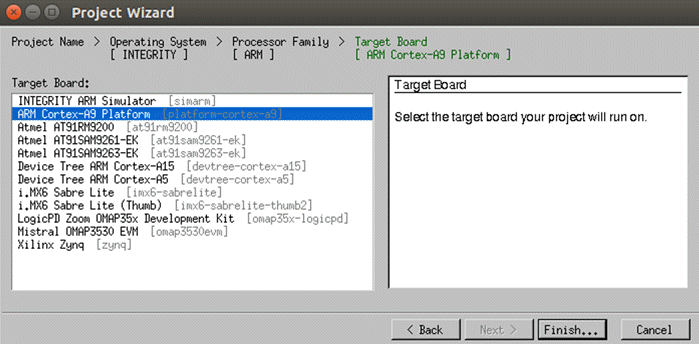
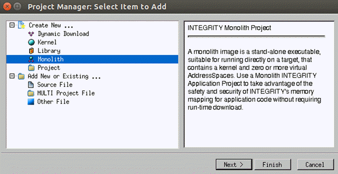
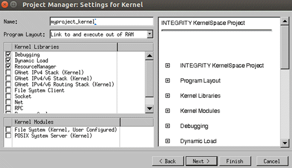
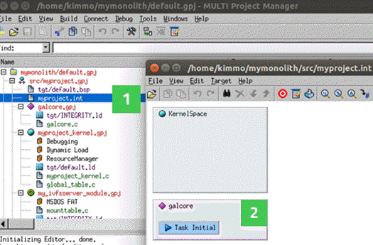
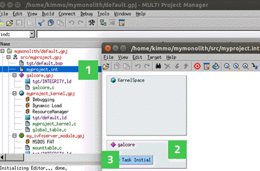

Building Monolith Project
In this tutorial, we build a monolith INTEGRITY project for a Qt example application. You can select any Qt example application that uses the supported Qt modules.
Before you can build a monolith INTEGRITY project, you need to prepare your build environment for the qmake build tool. You can do this by running the script ~/setEnvironment.sh that you created in Creating Script for Running Exports.
Run the following commands in a terminal:
source ~/setEnvironment.sh <Qt installation path>/qtbase/bin/qmake <Qt example application path>/<projectname>.pro make
The qmake tool must be called under the Qt installation path (<Qt installation path>), where you installed the Qt sources in Getting Qt Source Code.
<Qt example application path>/<projectname>.pro is the installation path of the Qt example application project file that the monolith INTEGRITY project will be built for.
Building Monolith Project
To build a monolith INTEGRITY project, create an empty directory for your project in your home folder. In the steps below, we use the directory name mymonolith.
Defining Project with Project Wizard
Launch MULTI Launcher and select File > Create New Project. Define your monolith project with Project Wizard:
- In the Project name tab, fill in the Directory field with the directory you just created.
- Select Next.
- In the Operating System tab, select INTEGRITY from the Operating System list.
Note: The OS Distribution Directory field must contain your INTEGRITY installation directory (in our example, mymonolith).
- Select Next.
- In the Processor Family tab, select ARM.
- Select Next.
- In the Target Board tab, select ARM Cortex-A9 Platform from the target board list.
- Select Finish.

After selecting Finish in Project Wizard, Project Manager is opened.
Project Manager Settings
With Project Manager you can define the settings for the monolith project:
- In the Select Item to Add dialog page, select Monolith from the Create New list.

- Select Next.
- In the Settings for Monolith dialog, define the settings:
- Source Code Directory is your project directory (in our example, mymonolith).
- Project Name is the name of your project. In our example, we use the name myproject.
- Language must be C. The Qt projects are C++ projects, but this will be configured later.
- Select Next.
- Use Shared Libraries should not be selected.
- Select Next.
- In the Configure number of Virtual AddressSpaces dialog page, select the checkbox Names of Virtual Address Spaces and type galcore.
- Select Next.
- In the Settings for Kernel dialog page, type the name of your kernel.
- Select Debugging, Dynamic Load and ResourceManager from the Kernel Libraries list.

- Select Next.
- In the Settings for OS Module Selection dialog page, select File System (User Configured) and GHnet IPv4 Stack (Virtual) from the OS Module list.
- Select Next.
- In the Settings for File System (User Configured) dialog page, select a filesystem that your monolith project supports.
In our example, we have selected MSDOS FAT from the Libraries list.
- Select Finish.
- In the Settings for Add File System Clients dialog page, select Finish.
Adding File System Mount Point
You need to configure the file system to use the first partition of the micro SD card. In the MULTI Project Manager view, you see a tree structure of your monolith project:
- Right-click the file mounttable.c to open the context menu.
- Select Modify Project > Add INTEGRITY File System Mount Point.
- In the Settings for FS MountPoint dialog, define the settings:
- Type / to Mount Directory.
- Select Next.
- File System Type is MSDOS FAT.
- Select Next.
- Select the Use Physical Device radio button.
- Type SDCardDev1 to the Device field.
- Slice is a.
- Select Finish.
Galcore VAS Settings
Next, define the virtual address space (VAS) settings for your project.
In the MULTI Project Manager view, you see a tree structure of your monolith project:
- Double-click the .int file in your project (1) (in the steps below, myproject.int).
- In the opened window, double-click the galcore virtual address space (VAS) area (2).

- VirtualAddressSpace Options dialog is opened.
- In the Attributes tab, select the values defined in Values in Attributes Tab.
- Select OK.
- In the galcore virtual address space area, double-click the Task Initial area (3).

- Select the Start Automatically check box.
- Select OK.
Values in Attributes Tab
Add the following attribute values for the virtual address space:
| Attribute | Value |
|---|---|
| Maximum Priority | 255 |
| Maximum Weight | 255 |
| Memory Pool Size | 2000P |
| Heap Size | 0X2000000 |
| Heap Extension Reserved Size | 0x20000 |
| Arguments | Leave blank. |
| Checkbox | Value |
| Create Extra Virtual Memory Regions | Select the checkbox. |
Editing Galcore Project
You need to edit a number of files in the monolith project.
File galcore.c
- Select galcore.c from the tree structure in the MULTI Project Manager view.
- Double-click the file to open it for editing.
- Add the following code to galcore.c:
#include <INTEGRITY.h> #include <stdlib.h> #include <stdio.h> extern Error GalCore_TaskInit(void); int main(void) { Error E; E = GalCore_TaskInit(); if (E != Success) { printf("Failed to start GalCore tasks\n"); } Exit(0); }
File galcore.gpj
- Select galcore.gpj from the tree structure in the MULTI Project Manager view.
- Right-click the file to open the context menu.
- Select Edit.
- Add the file libgalcore.a to galcore.gpj.
Contents of galcore.gpj should be as follows:
#!gbuild
#component integrity_virtual_address_space
[Program]
-lgalcore
tgt/INTEGRITY.ld
galcore.c
File kernel.gpj
- Select kernel.gpj from the tree structure in the MULTI Project Manager view.
- Right-click the file to open the context menu.
- Select Edit.
- Add the file libgalcore-iod.a to kernel.gpj.
Contents of kernel.gpj should be as follows:
#!gbuild
#component integrity_kernel_monolith
[Program]
-kernel
-ldebug
-lload
-lres
-lgalcore-iod
tgt/default.ld
myproject_kernel.c
global_table.c
File monolith.gpj
- Select monolith.gpj from the tree structure in the MULTI Project Manager view.
- Righ-click the file to open the context menu.
- Select Edit.
- Add the additional library directory $(__LIBS_DIR_BASE)/Vivante.
Contents of monolith.gpj should be as follows:
#!gbuild
#component integrity_monolith
[INTEGRITY Application]
-non_shared
-I$__OS_DIR/modules/ghs/ghnet2/source/kernel/integrity/ip4server :sourceDir=$__OS_DIR/modules/ghs/ghnet2/source/kernel/integrity/ip4server
-L$(__LIBS_DIR_BASE)/Vivante
tgt/default.bsp
myproject.int
galcore.gpj [Program]
myproject_kernel.gpj [Program]
my_ivfsserver_module.gpj [Program]
ip4server_module.gpj [Program]
.int File
- Select the .int file of your project from the tree structure in the MULTI Project Manager view.
- Right-click the file to open the context menu.
- Select Edit.
- Add the following lines at the end of the file.
Note: Replace </path/to/your/app/executable> with a path to your application executable.
AddressSpace Name myappname Filename /path/to/your/app/executable MemoryPoolSize 0x2000000 Language C++ HeapSize 0x6000000 Task Initial StackSize 0x30000 StartIt true EndTask HeapExtensionReservedSize 0x2000000 EndAddressSpace
Building monolith.gpj
Open monolith.gpj from the tree structure in the MULTI Project Manager view. To build the project:
- Right-click monolith.gpj to open the context menu.
- Select Build.
Your monolith project is now ready to be packaged for U-Boot.